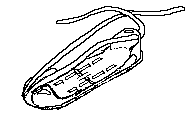

This rather flamboyant title refers to the so-called "Warrior in the Desert"

These shoes are discussed in detail in: Schick, Tamar. The cave of the warrior: a fourth millennium burial in the Judean desert. (IAA reports; no. 5) Jerusalem: Israel Antiquities Authority, 1998.
Return to [Index]
Footwear of the Middle Ages - Historical Shoe Designs/Jericho Warrior's Shoes, by
I. Marc Carlson. Copyright 2000
This page is given for the free exchange of information, provided the Author's Name is
included in all future revisions, and no money change hands, other than as expressed in
the Copyright Page.